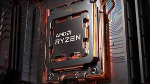

Nosotros
Technical Wolf es un emprendimiento enfocado en diagnostico, reparacion y mantenimiento de computadoras
Nuestro Servicio
Hace que tu equipo tenga una vida util y duradera acorde a lo que vas a hacer con ella, Desde actualizacion de hardware a armado completo de pc
Tu consulta no molesta
Productos
contamos con productos de hardware y perifericos para tu computadora
